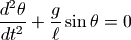

单摆和双摆模拟¶
单摆模拟¶
由一根不可伸长、质量不计的绳子，上端固定，下端系一质点，这样的装置叫做单摆。
单摆装置示意图
根据牛顿力学定律，我们可以列出如下微分方程：

其中 为单摆的摆角， 为单摆的长度， g为重力加速度。
此微分方程的符号解无法直接求出，因此只能调用odeint对其求数值解。
odeint函数的调用参数如下：
odeint(func, y0, t, ...)
其中func是一个Python的函数对象，用来计算微分方程组中每个未知函数的导数，y0为微分方程组中每个未知函数的初始值，t为需要进行数值求解的时间点。它返回的是一个二维数组result，其第0轴的长度为t的长度，第1轴的长度为变量的个数，因此 result[:, i] 为第i个未知函数的解。
计算微分的func函数的调用参数为： func(y, t)，其中y是一个数组，为每个未知函数在t时刻的值，而func的返回值也是数组，它为每个未知函数在t时刻的导数。
odeint要求每个微分方程只包含一阶导数，因此我们需要对前面的微分方程做如下的变形：
下面是利用odeint计算单摆轨迹的程序：
# -*- coding: utf-8 -*-
from math import sin
import numpy as np
from scipy.integrate import odeint
g = 9.8
def pendulum_equations(w, t, l):
th, v = w
dth = v
dv = - g/l * sin(th)
return dth, dv
if __name__ == "__main__":
import pylab as pl
t = np.arange(0, 10, 0.01)
track = odeint(pendulum_equations, (1.0, 0), t, args=(1.0,))
pl.plot(t, track[:, 0])
pl.title(u"单摆的角度变化, 初始角度=1.0弧度")
pl.xlabel(u"时间(秒)")
pl.ylabel(u"震度角度(弧度)")
pl.show()
odeint函数还有一个关键字参数args，其值为一个组元，这些值都会作为额外的参数传递给func函数。程序使用这种方式将单摆的长度传递给pendulum_equations函数。

初始角度为1弧度的单摆摆动角度和时间的关系
计算摆动周期¶
高中物理课介绍过当最大摆动角度很小时，单摆的摆动周期可以使用如下公式计算：
这是因为当 时，  ， 这样微分方程就变成了：
， 这样微分方程就变成了：
此微分方程的解是一个简谐震动方程，很容易计算其摆动周期。但是当初始摆角增大时，上述的近似处理会带来无法忽视的误差。下面让我们来看看如何用数值计算的方法求出单摆在任意初始摆角时的摆动周期。
要计算摆动周期只需要计算从最大摆角到0摆角所需的时间，摆动周期是此时间的4倍。为了计算出这个时间值，首先需要定义一个函数pendulum_th计算任意时刻的摆角：
def pendulum_th(t, l, th0):
track = odeint(pendulum_equations, (th0, 0), [0, t], args=(l,))
return track[-1, 0]
pendulum_th函数计算长度为l初始角度为th0的单摆在时刻t的摆角。此函数仍然使用odeint进行微分方程组求解，只是我们只需要计算时刻t的摆角，因此传递给odeint的时间序列为[0, t]。 odeint内部会对时间进行细分，保证最终的解是正确的。
接下来只需要找到第一个时pendulum_th的结果为0的时间即可。这相当于对pendulum_th函数求解，可以使用 scipy.optimize.fsolve 函数对这种非线性方程进行求解。
def pendulum_period(l, th0):
t0 = 2*np.pi*sqrt( l/g ) / 4
t = fsolve( pendulum_th, t0, args = (l, th0) )
return t*4
和odeint一样，我们通过fsolve的args关键字参数将额外的参数传递给pendulum_th函数。fsolve求解时需要一个初始值尽量接近真实的解，用小角度单摆的周期的1/4作为这个初始值是一个很不错的选择。下面利用pendulum_period函数计算出初始摆动角度从0到90度的摆动周期：
ths = np.arange(0, np.pi/2.0, 0.01)
periods = [pendulum_period(1, th) for th in ths]
为了验证fsolve求解摆动周期的正确性，我从维基百科中找到摆动周期的精确解：
其中的函数K为第一类完全椭圆积分函数，其定义如下：
我们可以用 scipy.special.ellipk 来计算此函数的值：
periods2 = 4*sqrt(1.0/g)*ellipk(np.sin(ths/2)**2)
下图比较两种计算方法，我们看到其结果是完全一致的：

单摆的摆动周期和初始角度的关系
完整的程序请参见： 单摆摆动周期的计算
双摆模拟¶
接下来让我们来看看如何对双摆系统进行模拟。双摆系统的如下图所示，

双摆装置示意图
两根长度为L1和L2的无质量的细棒的顶端有质量分别为m1和m2的两个球，初始角度为 和 ， 要求计算从此初始状态释放之后的两个球的运动轨迹。
公式推导¶
本节首先介绍如何利用拉格朗日力学获得双摆系统的微分方程组。
拉格朗日力学(摘自维基百科)
拉格朗日力学是分析力学中的一种。於 1788 年由拉格朗日所创立，拉格朗日力学是对经典力学的一种的新的理论表述。
经典力学最初的表述形式由牛顿建立，它着重於分析位移，速度，加速度，力等矢量间的关系，又称为矢量力学。拉格朗日引入了广义坐标的概念，又运用达朗贝尔原理，求得与牛顿第二定律等价的拉格朗日方程。不仅如此，拉格朗日方程具有更普遍的意义，适用范围更广泛。还有，选取恰当的广义坐标，可以大大地简化拉格朗日方程的求解过程。
假设杆L1连接的球体的坐标为x1和y1，杆L2连接的球体的坐标为x2和y2，那么x1,y1,x2,y2和两个角度之间有如下关系：


根据拉格朗日量的公式：

其中T为系统的动能，V为系统的势能，可以得到如下公式：

其中正号的项目为两个小球的动能，符号的项目为两个小球的势能。
将前面的坐标和角度之间的关系公式带入之后整理可得：
对于变量 的拉格朗日方程：

得到：
![L_1 [(m_1+m_2)L_1{\ddot \theta_1} + m_2 L_2 \cos(\theta_1 - \theta_2) {\ddot \theta_2} + m_2 L_2 \sin(\theta_1 - \theta_2) {\dot \theta_2}^2 + (m_1+m_2) g \sin(\theta_1)] = 0](_images/math/3242e083b65bfc52f350c86d099e9ff85a371903.png)
对于变量 的拉格朗日方程：
得到：
![m_2 L_2 [L_2 {\ddot \theta_2} + L_1 \cos(\theta_1 - \theta_2) {\ddot \theta_1} - L_1 \sin(\theta_1 - \theta_2) {\dot \theta_1}^2 + g \sin(\theta_2)] = 0](_images/math/24540f2fe08a9c35292f1e9b075dec5aa30fc63b.png)
这一计算过程可以用sympy进行推导：
# -*- coding: utf-8 -*-
from sympy import *
from sympy import Derivative as D
var("x1 x2 y1 y2 l1 l2 m1 m2 th1 th2 dth1 dth2 ddth1 ddth2 t g tmp")
sublist = [
(D(th1(t), t, t), ddth1),
(D(th1(t), t), dth1),
(D(th2(t), t, t), ddth2),
(D(th2(t),t), dth2),
(th1(t), th1),
(th2(t), th2)
]
x1 = l1*sin(th1(t))
y1 = -l1*cos(th1(t))
x2 = l1*sin(th1(t)) + l2*sin(th2(t))
y2 = -l1*cos(th1(t)) - l2*cos(th2(t))
vx1 = diff(x1, t)
vx2 = diff(x2, t)
vy1 = diff(y1, t)
vy2 = diff(y2, t)
# 拉格朗日量
L = m1/2*(vx1**2 + vy1**2) + m2/2*(vx2**2 + vy2**2) - m1*g*y1 - m2*g*y2
# 拉格朗日方程
def lagrange_equation(L, v):
a = L.subs(D(v(t), t), tmp).diff(tmp).subs(tmp, D(v(t), t))
b = L.subs(D(v(t), t), tmp).subs(v(t), v).diff(v).subs(v, v(t)).subs(tmp, D(v(t), t))
c = a.diff(t) - b
c = c.subs(sublist)
c = trigsimp(simplify(c))
c = collect(c, [th1,th2,dth1,dth2,ddth1,ddth2])
return c
eq1 = lagrange_equation(L, th1)
eq2 = lagrange_equation(L, th2)
执行此程序之后，eq1对应于 的拉格朗日方程， eq2对应于 的方程。
由于sympy只能对符号变量求导数，即只能计算 D(L, t), 而不能计算D(f, v(t))。 因此在求偏导数之前，将偏导数变量置换为一个tmp变量，然后对tmp变量求导数，例如下面的程序行对D(v(t), t)求偏导数，即计算
L.subs(D(v(t), t), tmp).diff(tmp).subs(tmp, D(v(t), t))
而在计算  时，需要将v(t)替换为v之后再进行微分计算。由于将v(t)替换为v的同时，会将 D(v(t), t) 中的也进行替换，这是我们不希望的结果，因此先将 D(v(t), t) 替换为tmp，微分计算完毕之后再替换回去：
时，需要将v(t)替换为v之后再进行微分计算。由于将v(t)替换为v的同时，会将 D(v(t), t) 中的也进行替换，这是我们不希望的结果，因此先将 D(v(t), t) 替换为tmp，微分计算完毕之后再替换回去：
L.subs(D(v(t), t), tmp).subs(v(t), v).diff(v).subs(v, v(t)).subs(tmp, D(v(t), t))
最后得到的eq1, eq2的值为：
>>> eq1
ddth1*(m1*l1**2 + m2*l1**2) +
ddth2*(l1*l2*m2*cos(th1)*cos(th2) + l1*l2*m2*sin(th1)*sin(th2)) +
dth2**2*(l1*l2*m2*cos(th2)*sin(th1) - l1*l2*m2*cos(th1)*sin(th2)) +
g*l1*m1*sin(th1) + g*l1*m2*sin(th1)
>>> eq2
ddth1*(l1*l2*m2*cos(th1)*cos(th2) + l1*l2*m2*sin(th1)*sin(th2)) +
dth1**2*(l1*l2*m2*cos(th1)*sin(th2) - l1*l2*m2*cos(th2)*sin(th1)) +
g*l2*m2*sin(th2) + ddth2*m2*l2**2
结果看上去挺复杂，其实只要运用如下的三角公式就和前面的结果一致了：
微分方程的数值解¶
接下来要做的事情就是对如下的微分方程求数值解：
由于方程中包含二阶导数，因此无法直接使用odeint函数进行数值求解，我们很容易将其改写为4个一阶微分方程组，4个未知变量为：  ， 其中
， 其中  为两个杆转动的角速度。
为两个杆转动的角速度。

下面的程序利用 scipy.integrate.odeint 对此微分方程组进行数值求解：
# -*- coding: utf-8 -*-
from math import sin,cos
import numpy as np
from scipy.integrate import odeint
g = 9.8
class DoublePendulum(object):
def __init__(self, m1, m2, l1, l2):
self.m1, self.m2, self.l1, self.l2 = m1, m2, l1, l2
self.init_status = np.array([0.0,0.0,0.0,0.0])
def equations(self, w, t):
"""
微分方程公式
"""
m1, m2, l1, l2 = self.m1, self.m2, self.l1, self.l2
th1, th2, v1, v2 = w
dth1 = v1
dth2 = v2
#eq of th1
a = l1*l1*(m1+m2) # dv1 parameter
b = l1*m2*l2*cos(th1-th2) # dv2 paramter
c = l1*(m2*l2*sin(th1-th2)*dth2*dth2 + (m1+m2)*g*sin(th1))
#eq of th2
d = m2*l2*l1*cos(th1-th2) # dv1 parameter
e = m2*l2*l2 # dv2 parameter
f = m2*l2*(-l1*sin(th1-th2)*dth1*dth1 + g*sin(th2))
dv1, dv2 = np.linalg.solve([[a,b],[d,e]], [-c,-f])
return np.array([dth1, dth2, dv1, dv2])
def double_pendulum_odeint(pendulum, ts, te, tstep):
"""
对双摆系统的微分方程组进行数值求解，返回两个小球的X-Y坐标
"""
t = np.arange(ts, te, tstep)
track = odeint(pendulum.equations, pendulum.init_status, t)
th1_array, th2_array = track[:,0], track[:, 1]
l1, l2 = pendulum.l1, pendulum.l2
x1 = l1*np.sin(th1_array)
y1 = -l1*np.cos(th1_array)
x2 = x1 + l2*np.sin(th2_array)
y2 = y1 - l2*np.cos(th2_array)
pendulum.init_status = track[-1,:].copy() #将最后的状态赋给pendulum
return [x1, y1, x2, y2]
if __name__ == "__main__":
import matplotlib.pyplot as pl
pendulum = DoublePendulum(1.0, 2.0, 1.0, 2.0)
th1, th2 = 1.0, 2.0
pendulum.init_status[:2] = th1, th2
x1, y1, x2, y2 = double_pendulum_odeint(pendulum, 0, 30, 0.02)
pl.plot(x1,y1, label = u"上球")
pl.plot(x2,y2, label = u"下球")
pl.title(u"双摆系统的轨迹, 初始角度=%s,%s" % (th1, th2))
pl.legend()
pl.axis("equal")
pl.show()
程序中的 DoublePendulum.equations 函数计算各个未知函数的导数，其输入参数w数组中的变量依次为：
- th1: 上球角度
- th2: 下球角度
- v1: 上球角速度
- v2: 下球角速度
返回值为每个变量的导数：
- dth1: 上球角速度
- dth2: 下球角速度
- dv1: 上球角加速度
- dv2: 下球角加速度
其中dth1和dth2很容易计算，它们直接等于传入的角速度变量：
dth1 = v1
dth2 = v2
为了计算dv1和dv2，需要将微分方程组进行变形为如下格式 :
如果我们希望让程序做这个事情的话，可以计算出 dv1 和 dv2 的系数，然后调用 linalg.solve 求解线型方程组：
#eq of th1
a = l1*l1*(m1+m2) # dv1 parameter
b = l1*m2*l2*cos(th1-th2) # dv2 paramter
c = l1*(m2*l2*sin(th1-th2)*dth2*dth2 + (m1+m2)*g*sin(th1))
#eq of th2
d = m2*l2*l1*cos(th1-th2) # dv1 parameter
e = m2*l2*l2 # dv2 parameter
f = m2*l2*(-l1*sin(th1-th2)*dth1*dth1 + g*sin(th2))
dv1, dv2 = np.linalg.solve([[a,b],[d,e]], [-c,-f])
上面的程序相当于将原始的微分方程组变换为
程序绘制的小球运动轨迹如下：

初始角度微小时的双摆的摆动轨迹

大初始角度时双摆的摆动轨迹呈现混沌现象
可以看出当初始角度很大的时候，摆动出现混沌现象。
动画显示¶
计算出小球的轨迹之后我们很容易将结果可视化，制作成动画效果。制作动画可以有多种选择：
- visual库可以制作3D动画
- pygame制作快速的2D动画
- tkinter或者wxpython直接在界面上绘制动画
这里介绍如何使用matplotlib制作动画。整个动画绘制程序如下：
# -*- coding: utf-8 -*-
import matplotlib
matplotlib.use('WXAgg') # do this before importing pylab
import matplotlib.pyplot as pl
from double_pendulum_odeint import double_pendulum_odeint, DoublePendulum
fig = pl.figure(figsize=(4,4))
line1, = pl.plot([0,0], [0,0], "-o")
line2, = pl.plot([0,0], [0,0], "-o")
pl.axis("equal")
pl.xlim(-4,4)
pl.ylim(-4,2)
pendulum = DoublePendulum(1.0, 2.0, 1.0, 2.0)
pendulum.init_status[:] = 1.0, 2.0, 0, 0
x1, y1, x2, y2 = [],[],[],[]
idx = 0
def update_line(event):
global x1, x2, y1, y2, idx
if idx == len(x1):
x1, y1, x2, y2 = double_pendulum_odeint(pendulum, 0, 1, 0.05)
idx = 0
line1.set_xdata([0, x1[idx]])
line1.set_ydata([0, y1[idx]])
line2.set_xdata([x1[idx], x2[idx]])
line2.set_ydata([y1[idx], y2[idx]])
fig.canvas.draw()
idx += 1
import wx
id = wx.NewId()
actor = fig.canvas.manager.frame
timer = wx.Timer(actor, id=id)
timer.Start(1)
wx.EVT_TIMER(actor, id, update_line)
pl.show()
程序中强制使用WXAgg进行后台绘制：
matplotlib.use('WXAgg')
然后启动wx库中的时间事件调用update_line函数重新设置两条直线的端点位置：
import wx
id = wx.NewId()
actor = fig.canvas.manager.frame
timer = wx.Timer(actor, id=id)
timer.Start(1)
wx.EVT_TIMER(actor, id, update_line)
在update_line函数中，每次轨迹数组播放完毕之后，就调用：
if idx == len(x1):
x1, y1, x2, y2 = double_pendulum_odeint(pendulum, 0, 1, 0.05)
idx = 0
重新生成下一秒钟的轨迹。由于在 double_pendulum_odeint 函数中会将odeint计算的最终的状态赋给 pendulum.init_status ，因此连续调用 double_pendulum_odeint 函数可以生成连续的运动轨迹
def double_pendulum_odeint(pendulum, ts, te, tstep):
...
track = odeint(pendulum.equations, pendulum.init_status, t)
...
pendulum.init_status = track[-1,:].copy()
return [x1, y1, x2, y2]
程序的动画效果如下图所示：
双摆的摆动动画效果截图